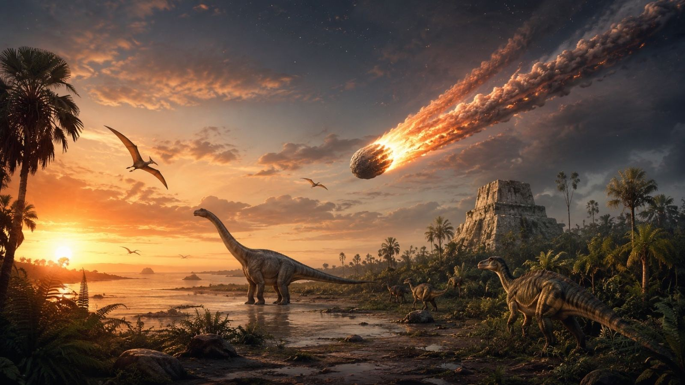
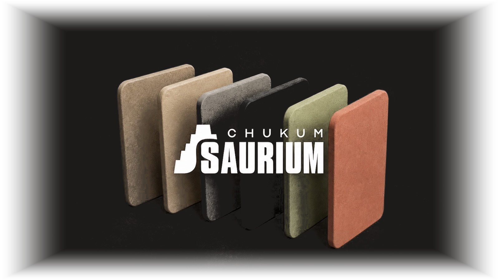
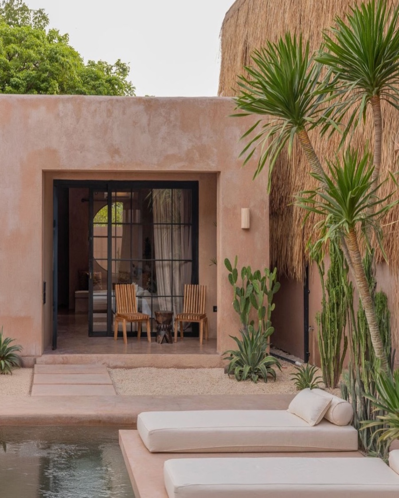
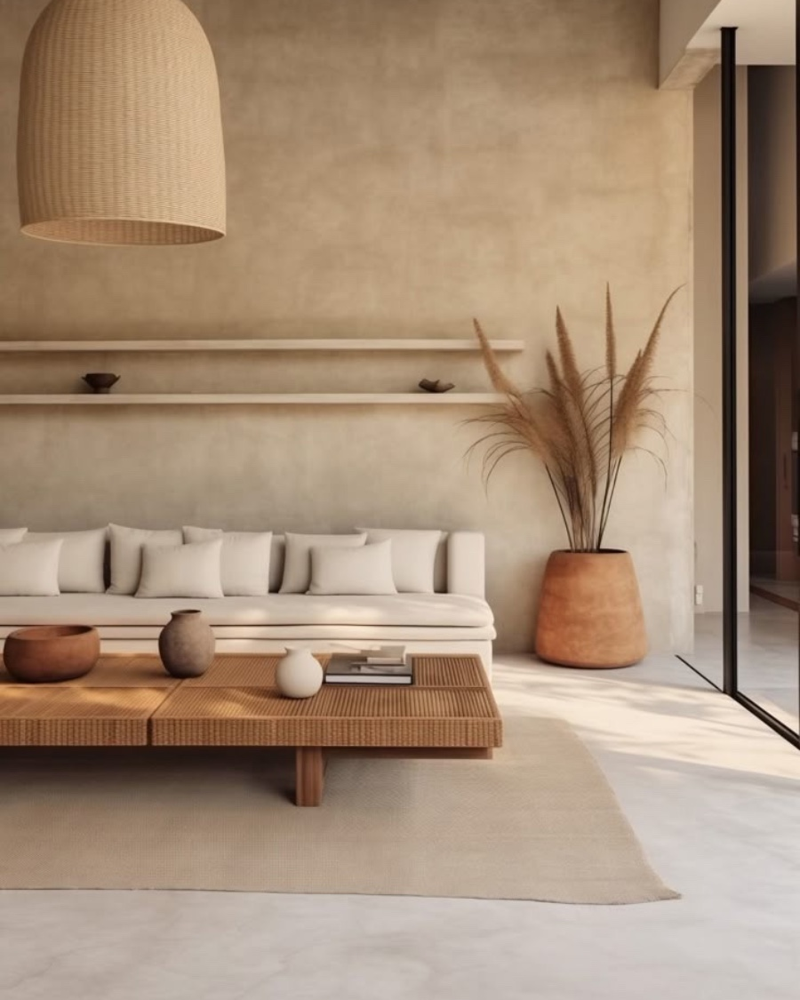
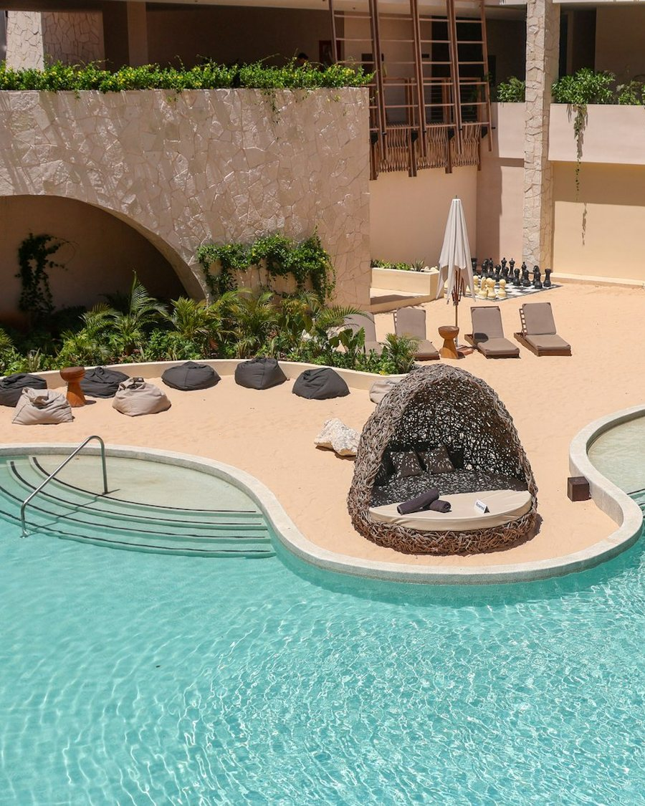
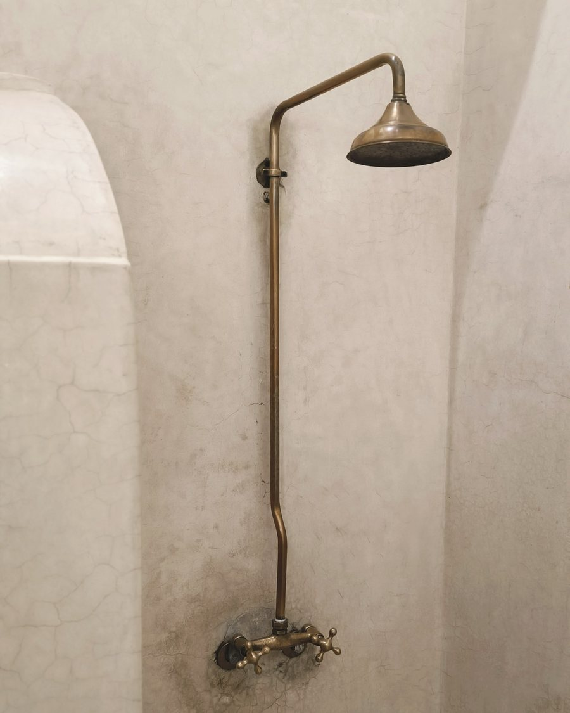

Chukum auténtico de la Península de Yucatán
Un recubrimiento natural con huella histórica. Nacido en Yucatán, listo para el mundo.

La historia
Una tierra que guarda lo que pasa por ella.
Del impacto que marcó la península al material que hoy recubre sus muros. Sesenta y seis millones de años en tres capítulos.
Recorrer la historiaEl material
Qué es el chukum
Un estuco natural de origen maya: resina del árbol de chukum mezclada con cal de la península. Mil años de uso continuo, del estuco de las ciudades mayas a la arquitectura de Tulum y la Riviera Maya. Alta adherencia, repelencia al agua y comportamiento probado en clima tropical extremo.

- El árbol
- Havardia albicans, un árbol espinoso de la selva baja de Yucatán. Los mayas lo llamaron chukum y aprovecharon su corteza durante siglos, extrayéndola sin dañar el árbol.
- La técnica
- La corteza se hierve para liberar sus taninos y el extracto se mezcla con cal hidratada. El resultado es una pasta que se aplica como estuco fino, capa sobre capa, sin pintura ni selladores.
- Hidrófugo natural
- Los mayas lo usaban para impermeabilizar cisternas y depósitos de agua. Por eso hoy recubre piscinas, cenotes artificiales y baños: repele el agua y deja respirar el muro.
- Auténtico, no imitación
- El chukum auténtico lleva resina real del árbol. Las imitaciones acrílicas copian el color, no el comportamiento: no envejecen igual, no respiran igual y no vienen de Yucatán.
- Listo para exportar
- Presentación en saco de 20 kg, elaborado en la Península de Yucatán, con ficha técnica y soporte para proyectos internacionales.
Acabados
Seis acabados, una misma tierra
Pigmentos minerales sobre la misma base de resina y cal. Sin pintura: el color es el material. Elegí uno y mirá la misma casa antes y después.

Movés el mouse sobre la casa o arrastrás la barra para comparar.
Donde la historia se vuelve arquitectura
Muros y fachadas, piscinas y cenotes, interiores, baños y mobiliario. Una sola pasta, aplicada capa sobre capa.




¿Cuánto chukum necesita tu obra?
Ingresá los metros cuadrados y calculamos los sacos de 20 kg.
30 sacos de 20 kg
Estimación con rendimiento promedio de 4 m² por saco a dos manos. Confirmamos cantidades exactas según superficie y acabado.
Llevá SAURIUM a tu próximo proyecto
Escribinos y coordinamos muestras, fichas técnicas y logística de exportación.
Rodrigo López Alam — Ventas y exportación · +52 999 369 9488